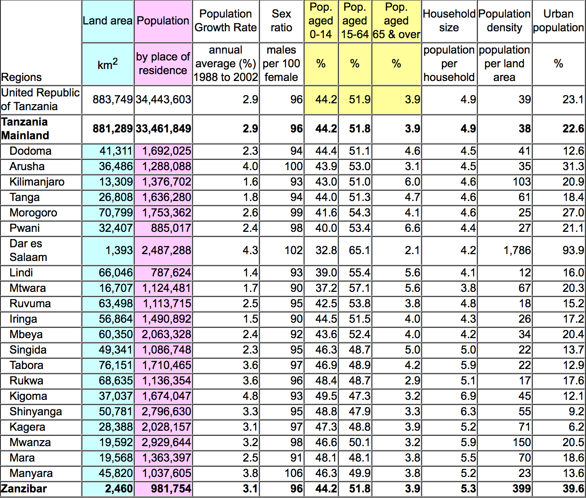

Many published tables are more complex than the simple tables that we have
described earlier in this section. However they often consist of several simpler
tables combined together. Often each column is a simple table.
Regional statistics for Tanzania
The table below was published by the National Bureau of Statistics in Tanzania
in 2003 to summarise differences between the regions of the country.

We have coloured the columns of land areas and population. The regional populations
form a frequency table and the areas are also a partition of the total area of
the country. The totals are shown in the top row of the table and an extra row
has been added with the mainland total (excluding Zanzibar).
We also highlighted the overall age distribution in yellow. These three percentages
also summarise a frequency table, though the raw population counts have not been
presented in the table. The values for these three columns in the other rows of
the table similarly summarise frequency tables for the age distributions in the
regions.
None of the remaining columns are partitions of a total. For example, the sum
of the population growth rates for two regions, or the sum of their household
sizes are not values that could be interpreted. The overall values for the whole
of Tanzania in the top row of the table cannot be found in a simple way from the
values in the regions.
It can sometimes be harder to identify parts of a table that are frequency
tables or other partions.
UN survey responses
The United Nations conducted a survey about the extent to which countries
implemented a set of 'Fundamental Principles of Official Statistics' in
their National Statistics Offices. The table below was published in a UN
report and describes which countries were sent questionnaires (the recipients)
and which ones returned the questionnaires (respondents).
Finally, note that the values in the bottom right do not form a frequency table
either.
When there are only 2 categories, a single value (such as the response rate
of 81% here) adequately summarises the frequency table, so the column of response
rates in the published table is a concise summary.
A column of percentages does not always imply a frequency
table.